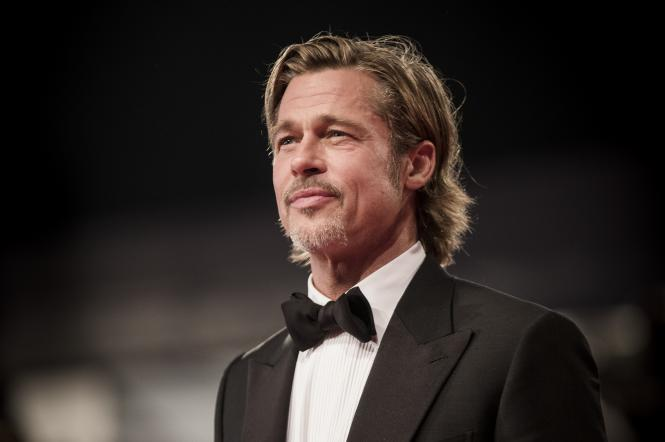

Американський кіноактор, лауреат премій «Оскар» (2014, 2020) та «Золотий глобус» (1996, 2020), «Еммі» (2014), БАФТА (2014, 2020) та інших.
Народився в м. Шауні, Оклахома, але його дитинство та юнацькі роки пройшли у місті Спрингфілд, штат Міссурі. Деймон і Клуні Його батько працював агентом у фірмі, що займалася автоперевезеннями, тому часто брав сина у подорожі. Мати Бреда, Джейн, працювала у школі радником та виховувала дітей, бо Бред має ще молодшого від нього на два роки брата Дуга та молодшу на 4 роки сестру Джулію. Батьки Бреда та його брат і сестра (тепер обидва вже мають власних дітей) досі мешкають у Спрингфілді. У дитячі роки не дуже охоче відвідував школу, але навчався непогано. Він також неохоче відвідував баптистську церкву, до якої належали його батьки, тому вже в дорослому віці взагалі відійшов від релігії. Загалом, він був звичайним хлопцем, котрий потроху займався різними видами спорту, слухав платівки Елтона Джона та гурту The Who, раз чи два на тиждень ходив у кіно. Завдяки приязній атмосфері у родині, Бред та його брат і сестра мали дуже щасливе дитинство. Бред виступав у шкільних виставах, але тоді навіть і не мріяв про кар'єру в кіно.